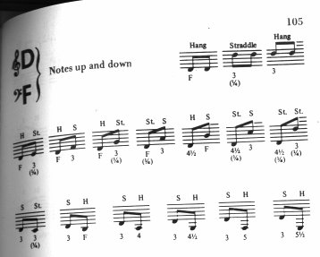
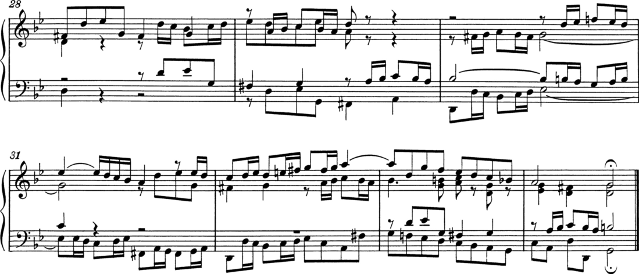

| [Racine][Table des matières][Index][ ? ] |
LilyPond — Essai sur la gravure musicale automatisée
|
Cet essai traite de la gravure de la musique et de la notation assistée par ordinateur à l’aide de LilyPond version 2.19.65. |
| 1. La gravure musicale | ||
| 2. Références bibliographiques | ||
| A. GNU Free Documentation License | Licence de ce document. | |
| B. Index de LilyPond |
|
Pour connaître la place qu’occupe ce manuel dans la documentation, consultez la page Manuels. Si vous ne disposez pas de certains manuels, la documentation complète se trouve sur http://lilypond.org/. |
| [ << Top ] | [Racine][Table des matières][Index][ ? ] | [ Références bibliographiques >> ] | ||
| [ < Top ] | [ Plus haut: Top ] | [ L'histoire de LilyPond > ] | ||
1. La gravure musicale
Ce chapitre traite des objectifs et de l’architecture de LilyPond.
| 1.1 L’histoire de LilyPond | ce qui ne va pas avec les logiciels | |
| 1.2 La gravure en détails | de l’homme à la machine | |
| 1.3 La gravure automatisée | de la machine à l’homme | |
| 1.4 De la théorie à la pratique | qui fait quoi | |
| 1.5 Démonstration par l’exemple | LilyPond à l’œuvre | |
| 1.6 Comparatif (BWV 861) |
| [ << La gravure musicale ] | [Racine][Table des matières][Index][ ? ] | [ Références bibliographiques >> ] | ||
| [ < La gravure musicale ] | [ Plus haut: La gravure musicale ] | [ La gravure en détails > ] | ||
1.1 L’histoire de LilyPond
Bien avant que LilyPond soit à l’origine de tout un matériel d’orchestre d’excellente facture ou qu’il participe à la création d’ouvrages universitaires, avant même qu’il serve à imprimer la plus simple des mélodies, avant que la communauté des utilisateurs de LilyPond s’étende sur toute la planète, LilyPond est parti du constat suivant :
Pourquoi la plupart des partitions qui sortent d’un ordinateur ne parvient-elle pas à égaler la beauté et l’élégance des partitions gravées à la main ?
Certaines réponses sont évidentes si l’on considère les deux partitions ci-dessous. La première, qui date des années 1950, a été gravée à la main ; la seconde est une édition informatisée contemporaine.
Bärenreiter BA 320, ©1950 :

Henle n° 666, ©2000 :

Il s’agit de la même musique, tirée de la première suite pour violoncelle solo de Bach, mais ce n’est pas si évident, surtout lorsqu’on imprime ces deux pages et les considère à distance. (Les images contenues dans la version PDF de ce manuel sont en haute résolution, en vue de leur impression.) Si vous posez ces pages sur un pupitre et les lisez ou prenez votre archet, vous constaterez que la gravure manuelle est nettement plus agréable à la vue. Ses lignes sont fluides et il y a du mouvement, c’est de la musique et c’est vivant. Quant à l’édition moderne, elle a l’air terne et mécanique.
Ce qui rend cette nouvelle édition différente n’est pas évident au premier coup d’œil : c’est propre et condensé, presque « mieux » que l’autre dans la mesure où tout y est « calculé » pour atteindre l’uniformité. À vrai dire, il nous a fallu un moment pour nous en rendre compte. Notre but étant d’améliorer la notation informatisée, il nous fallait mettre le doigt sur ce qui ne va pas.
Le problème se situe au niveau même de la précision toute mathématique qui amène à l’uniformité de cette nouvelle édition. Considérons les barres de mesure en milieu de ligne : dans la partition traditionnelle, leur emplacement varie quelque peu, à l’inverse de la nouvelle, où toutes les barres sont rigoureusement alignées. Pour que ce soit bien clair, le schéma ci-dessous montre en parallèle ce positionnement, tant pour la version traditionnelle – à gauche – que pour la version moderne – à droite.

Sur la partition générée par l’ordinateur, même les notes sont alignées et la mélodie finit par disparaître derrière un quadrillage à base de signes musicaux.
Il y a bien sûr d’autres divergences. En ce qui concerne l’édition traditionnelle, les traits verticaux sont plus épais, les liaisons plus rapprochées des têtes de note, et la pente des ligatures – liens groupant les croches – pas toujours la même. D’aucuns diront que tout ceci n’est que pinaillerie, il n’en demeure pas moins que cette partition a plus de lisibilité. Dans la partition informatisée, il n’y a pratiquement aucune différence d’une ligne à l’autre, et si l’interprète la quitte des yeux un instant, il risque de ne plus savoir où il en était sur la page.
LilyPond a été conçu dans le but de résoudre les problèmes que nous avons décelés dans divers logiciels existant et aussi dans l’optique d’atteindre une qualité comparable aux meilleures partitions gravées à la main.
| [ << La gravure musicale ] | [Racine][Table des matières][Index][ ? ] | [ Références bibliographiques >> ] | ||
| [ < L'histoire de LilyPond ] | [ Plus haut: La gravure musicale ] | [ Fontes et polices > ] | ||
1.2 La gravure en détails
L’art de la typographie musicale est celui de la gravure musicale. Ce terme vient du procédé traditionnel de l’impression musicale1. Il y a encore quelques décennies, les partitions étaient réalisées en taillant et ciselant la musique dans des plaques de zinc ou d’étain, en inverse, comme dans un miroir. Ces plaques étaient encrées et les reliefs créés par les poinçons et les découpes retenaient l’encre. La partition était alors réalisée en pressant le papier contre la plaque. Découpes et poinçons étaient entièrement faits à la main. Dans la mesure où les corrections étaient presque irréalisables, la gravure devait être correcte dès le premier essai. Cela demande évidemment une très grande habileté. La gravure musicale est un métier d’artisan, appris sur le tas. Un graveur ne devenait un maître accompli qu’après une dizaine d’années de pratique.

LilyPond s’inspire du travail réalisé par les maîtres graveurs qui officiaient chez les éditeurs européens jusque dans les années 1950. Ceux-ci sont bien souvent considérés comme ayant atteint le sommet de leur art, et comptent dans leurs rangs des maisons telles que Bärenreiter, Duhem, Durand, Hofmeister, Peters ou Schott. Au fil de notre analyse de ces éditions, nous en avons appris encore plus sur ce qu’il faut pour obtenir une partition d’excellente facture, et ce sur quoi LilyPond devait porter ses efforts.
| Fontes et polices | De la création des polices musicales | |
| Espacement | Considérations sur les espacements | |
| Lignes supplémentaires | Cas particulier en matière de notation | |
| Tailles | Considérations sur la taille des portées | |
| La raison de tous ces efforts | Pourquoi s’attacher aux détails |
| [ << La gravure musicale ] | [Racine][Table des matières][Index][ ? ] | [ Références bibliographiques >> ] | ||
| [ < La gravure en détails ] | [ Plus haut: La gravure en détails ] | [ Espacement > ] | ||
Fontes et polices
Les images ci-dessous mettent en évidence certaines différences entre l’art du graveur traditionnel et le résultat habituel sorti d’un ordinateur. L’image de gauche est un fac-similé d’un bémol tiré d’une édition Bärenreiter traditionnelle ; celle de droite est issue de la même partition, éditée en 2000. Bien que toutes deux soient imprimées avec le même encrage, la version « ancienne » paraît plus noire : les lignes de la portée y sont plus épaisses et le galbe du bémol de Bärenreiter est à la limite de la volupté. Sur l’autre image, les lignes sont plus fines et le bémol semble raide, coincé.
 |  | |
| Bärenreiter (1950) | Henle (2000) |
Lorsque nous nous sommes décidés à écrire un programme permettant de typographier la musique, aucune police librement accessible ne correspondait à l’esthétique de nos partitions préférées. Sans toutefois nous décourager, nous avons créé notre propre jeu de symboles musicaux à partir des éditions traditionnelles dont nous disposions. L’expérience aidant, notre goût typographique s’est développé et nous avons pu appréhender certaines subtilités stylistiques qui nous font trouver maintenant de piètre qualité des polices que nous avions tout d’abord appréciées.
À titre d’exemple, voici deux fontes musicales : la première ligne comporte des caractères de la police par défaut du logiciel Sibelius – la police Opus – et la deuxième, ces mêmes caractères dans notre propre police pour LilyPond.

Les symboles de LilyPond sont plus forts et leur épaisseur plus équilibrée, ce qui d’ailleurs les rend plus lisibles. Les extrémités en pointe, comme pour le soupir, devraient avoir une terminaison légèrement arrondie plutôt qu’un angle tranchant. Ceci s’explique par la fragilité des poinçons qui s’émoussent rapidement lors du martellement et de la ciselure. Par ailleurs, la densité de la police doit tenir compte de l’épaisseur des lignes, ligatures et liaisons afin d’obtenir un rendu plein d’intensité et d’équilibre.
Vous noterez aussi que notre ronde n’est pas ovoïde, mais plutôt en forme de losange. La barre de notre bémol est comme brossée, le haut étant de fait un peu plus large. Notre dièse et notre bécarre sont plus évidents à reconnaître à distance du fait que leurs barres transversales n’ont pas la même pente et que les verticales sont plus épaisses.
| [ << La gravure musicale ] | [Racine][Table des matières][Index][ ? ] | [ Références bibliographiques >> ] | ||
| [ < Fontes et polices ] | [ Plus haut: La gravure en détails ] | [ Lignes supplémentaires > ] | ||
Espacement
Si l’on considère l’espacement, sa répartition devrait refléter la durée des notes. Néanmoins, et comme nous l’avons vu plus haut avec la suite de Bach, la plupart des éditions modernes se basent sur des durées à la précision mathématique, ce qui entraîne un effet des plus monotones. Dans l’exemple qui suit, le même motif est imprimé deux fois : la première en appliquant un espacement chronométrique, la seconde avec quelques corrections. Quelle version remporte vos suffrages ?
![[image of music]](2e/lily-0825567f.png)
![[image of music]](95/lily-184c0193.png)
Chaque mesure de ce fragment comporte des notes d’égale valeur, ce qui devrait se constater au niveau de l’espacement. Malheureusement, notre œil nous trompe : non seulement il considère la distance séparant deux têtes de notes mais, de surcroît, il prend en compte l’espace entre deux hampes. Par voie de conséquence, une succession de notes hampe en haut puis hampe en bas devrait comporter un espace accru et, dans une situation inverse, être plus resserrée, sans oublier de considérer la hauteur de chacune de ces notes. La deuxième ligne comporte de tels aménagements alors que, dans la première ligne, la succession hampe descendante puis montante laisse apparaître des notes resserrées. Un maître graveur ajusterait les espaces pour obtenir un rendu qui flatte l’œil.
Autre effet d’optique – que d’ailleurs LilyPond prend en considération – l’espace entre la hampe et la barre de mesure. Lorsqu’une barre est précédée d’une hampe montante, il est judicieux d’accroître l’espace qui les sépare pour éviter cette sensation de tassement. Une note dont la hampe va vers le bas ne nécessite pas un tel ajustement.
| [ << La gravure musicale ] | [Racine][Table des matières][Index][ ? ] | [ Références bibliographiques >> ] | ||
| [ < Espacement ] | [ Plus haut: La gravure en détails ] | [ Tailles > ] | ||
Lignes supplémentaires
Les lignes supplémentaires sont une gageure pour le typographe : les différents symboles musicaux doivent être suffisamment rapprochés pour que le lecteur identifie la hauteur au premier coup d’œil. Vous noterez, dans l’exemple qui suit, que les lignes supplémentaires sont un peu plus épaisses que celles de la portée. Par ailleurs, un maître graveur écourtera la ligne supplémentaire en présence d’une altération. LilyPond, dans sa recherche d’efficacité, adopte ces pratiques.
 |  |
| [ << La gravure musicale ] | [Racine][Table des matières][Index][ ? ] | [ Références bibliographiques >> ] | ||
| [ < Lignes supplémentaires ] | [ Plus haut: La gravure en détails ] | [ La raison de tous ces efforts > ] | ||
Tailles
Une même œuvre peut être imprimée dans différents formats – d’une partie instrumentale au conducteur format de poche. Les graveurs traditionnels utilisaient alors des poinçons différents pour obtenir le meilleur rendu selon la taille de la partition. L’avènement des fontes digitalisées permet d’obtenir n’importe quelle taille à partir d’un simple tracé. Bien que ceci constitue un progrès en soi, il nous faut cependant nuancer : les glyphes sont moins forts lorsqu’ils sont de taille réduite.
Pour les besoins de LilyPond, nous avons créé des polices de graisse différente selon la taille. Voici ce que produit LilyPond dans une taille de portée de 26 points :

et la même musique en 11 points, grossie de 236 % pour obtenir une taille identique à l’image précédente :

Comme vous le constatez, LilyPond imprime des lignes un peu plus épaisses pour garantir une meilleure lecture à taille réduite.
Ceci permet par ailleurs de faire coexister harmonieusement plusieurs portées de taille différente sur une même page :
![[image of music]](73/lily-f7887b3b.png)
| [ << La gravure musicale ] | [Racine][Table des matières][Index][ ? ] | [ Références bibliographiques >> ] | ||
| [ < Tailles ] | [ Plus haut: La gravure en détails ] | [ La gravure automatisée > ] | ||
La raison de tous ces efforts
Les musiciens sont normalement plus concentrés sur la manière dont ils jouent la musique que sur son apparence, aussi ces pinailleries sur des détails de typographie peuvent paraître académiques. Il n’en est rien. La partition contribue, au même titre que bien d’autres éléments, à l’existence même d’une représentation : tout doit être fait pour que l’interprète donne le meilleur de lui-même, et ce qui est peu clair ou pas agréable à lire constitue un frein.
La musique gravée de manière traditionnelle présente des symboles denses et des lignes épaisses. Ceci produit un résultat équilibré, à plus forte raison si la partition est éloignée du lecteur, comme lorsqu’elle est posée sur un pupitre. Une répartition attentive des blancs permet de resserrer la musique sans pour autant tasser les symboles et, au final, diminue le nombre de tournes – avantage indéniable.
C’est une caractéristique commune de la typographie. La présentation devrait être soignée, non seulement pour l’amour de l’art, mais plus spécialement parce qu’elle vient en aide au lecteur dans sa tâche. Pour du matériel d’interprétation tel que les partitions de musique, ceci est doublement important : les musiciens sont limités dans leur attention. Au moins leur attention se porte sur la lecture, au plus ils peuvent se concentrer sur l’exécution. En d’autres termes, une meilleure typographie se traduit par une meilleure interprétation.
Ces considérations montrent bien que la typographie musicale est un art à la fois complexe et plein de subtilités, et qu’elle requiert des compétences particulières que la majorité des musiciens ne possède pas. LilyPond s’efforce de transposer le degré d’excellence de la gravure traditionnelle à l’ère de l’ordinateur et donc de le mettre à disposition de tous les musiciens. Nous avons affiné nos algorithmes, le design de nos fontes et les réglages du programme de manière à produire des partitions d’une qualité comparable aux bonnes vieilles éditions que nous avons toujours autant de plaisir à voir et à interpréter.
| [ << La gravure musicale ] | [Racine][Table des matières][Index][ ? ] | [ Références bibliographiques >> ] | ||
| [ < La raison de tous ces efforts ] | [ Plus haut: La gravure musicale ] | [ Concours de beauté > ] | ||
1.3 La gravure automatisée
Nous allons maintenant examiner les éléments nécessaires à la création d’un logiciel capable d’imiter le rendu des partitions gravées à l’ancienne. Nous commencerons par voir comment inculquer à l’ordinateur les « bonnes manières » de la présentation. Nous nous attarderons ensuite sur l’analyse comparative par rapport aux éditions traditionnelles, avant de considérer le degré de flexibilité à y inclure pour être en mesure de gérer les différents cas de figure particuliers à la notation.
| Concours de beauté | l’option du moindre mal | |
| Modélisation et banc d’essai | l’évaluation des performances | |
| Règles de formatage | l’architecture flexible |
| [ << La gravure musicale ] | [Racine][Table des matières][Index][ ? ] | [ Références bibliographiques >> ] | ||
| [ < La gravure automatisée ] | [ Plus haut: La gravure automatisée ] | [ Modélisation et banc d'essai > ] | ||
Concours de beauté
Quels sont en réalité nos critères de formatage ? Considérant l’image suivante, laquelle de ces trois configurations devrions-nous choisir pour formater la liaison ?
![[image of music]](08/lily-375d30e8.png)
Seuls quelques ouvrages traitent de l’art de graver la musique. Ils ne contiennent malheureusement que des généralités et quelques exemples. La lecture de telles règles est certes instructive, mais est très loin de nous conduire à un algorithme prêt à être implémenté dans un programme. Dans la pratique, suivre les instructions de ces traités aboutirait à des algorithmes qui figent bon nombre d’exceptions. Répertorier tous ces cas de figure demanderait un travail considérable, qui finalement ne les couvrirait pas tous.

Règles de formatage définies par l’exemple. Image tirée de l’ouvrage de Ted Ross « The Art of Music Engraving »
Plutôt que d’écrire une foultitude de règles qui embrasserait tous les cas de figure possibles et imaginables en matière de mise en forme, nous avons préféré inculquer à LilyPond un certain nombre d’objectifs qui lui permette de choisir entre différentes alternatives selon leur esthétique. Pour ce faire, chacune des configurations est analysée en terme de moins bonne qualité, et nous opterons pour celle étant la moins mauvaise.
Voici, à titre d’exemple, trois configurations possibles pour le tracé d’une liaison ; LilyPond leur attribue individuellement une « note de laideur ». Le premier essai se voit attribuer 15,39 points notamment pour l’effleurement de la tête de note.
![[image of music]](0f/lily-cf81ea3d.png)
La liaison ci-dessous reste à une distance uniforme des notes, mais il faut tenir compte du fait qu’elle n’est pas rattachée aux première et dernière notes. Ceci nous fait 1,71 points pour le début de la liaison et 9,37 pour la terminaison – qui est beaucoup plus éloignée de la dernière note. Par ailleurs, la liaison monte alors que la mélodie redescend, ce qui entraîne une pénalité de 2 points. Ceci nous fait un total de 13,08 points de laideur.
![[image of music]](db/lily-338e1ad8.png)
Quant à la liaison qui suit, seule la terminaison reste éloignée de la dernière note, ce qui donne 10,04 points de laideur auxquels nous ajoutons 2 autres points pour la pente ascendante. Cette configuration étant la moins laide, ou plutôt la version la plus satisfaisante, nous la sélectionnons.
![[image of music]](97/lily-ffbf08e0.png)
Cette manière de procéder est générique, et nous y avons recours dans bon nombre de situations, comme pour déterminer la pente d’un lien de croches, formater des accords liés, formater des accords avec des valeurs pointées, positionner les sauts de ligne ou de page. Cette technique est consommatrice de temps de calcul, dans la mesure où elle examine de nombreuses possibilités ; néanmoins, le jeu en vaut la chandelle, puisque le résultat final est bien meilleur et nous rapproche des éditions traditionnelles.
| [ << La gravure musicale ] | [Racine][Table des matières][Index][ ? ] | [ Références bibliographiques >> ] | ||
| [ < Concours de beauté ] | [ Plus haut: La gravure automatisée ] | [ Règles de formatage > ] | ||
Modélisation et banc d’essai
Au fil du temps, le rendu de LilyPond a évolué, et continue de s’améliorer lorsqu’on le compare aux partitions gravées à la main.
Voici un extrait de l’une de nos éditions de référence (Bärenreiter BA 320) :

et ce que génère l’une des anciennes versions de LilyPond – la 1.4, publiée en mai 2001 :

La sortie LilyPond est certes lisible, et acceptable pour beaucoup de gens. Cependant, une comparaison minutieuse avec une édition gravée à la main révèle de nombreuses erreurs de formatage :

- trop d’espace avant la métrique
- la hampe des notes ligaturées est trop longue
- les deuxième et quatrième mesures sont trop tassées
- la liaison est affreuse
- les indications de trille sont trop grosses
- les hampes sont trop fines
Passons sous silence les notes et indications absentes, tout comme la faute de hauteur !
En ajustant les algorithmes, paramètres et polices concernés, nous avons pu améliorer le résultat. La deuxième ligne ci-dessous a été générée par la version la plus récente de LilyPond (2.19.65).
![[image of music]](36/lily-50c23d5a.png)
Sans être un clone de l’édition de référence, cette sortie est plus proche d’une qualité de publication que les précédentes.
Règles de formatage
Nous pouvons aussi évaluer les capacités de LilyPond dans ses choix, en comparant ses résultats avec ce que génèrent d’autres logiciels du marché. Notre choix s’est porté sur Finale 2008, l’un des logiciels les plus populaires notamment en Amérique du Nord. Son plus proche concurrent est Sibelius, très répandu sur le marché européen.
Pour cette analyse comparative, nous avons choisi la fugue en sol mineur du premier livre du Clavier bien tempéré de Bach (BWV 861). En voici le thème :
![[image of music]](0e/lily-96550f49.png)
Nous nous sommes intéressés aux sept dernières mesures (27 à 34) de l’œuvre, que nous avons saisies à la fois avec Finale et avec LilyPond. C’est à cet endroit que le sujet est rappelé, dans une strette à trois voix, avant de mener à la conclusion. Pour ce qui est de Finale, nous nous sommes abstenus d’effectuer quelque ajustement que ce soit dans le but d’obtenir un résultat par défaut. Ceci permet de vraiment apprécier conjointement ce que génère chacun des deux logiciels sans retouche aucune. Nous avons toutefois redimensionné la page pour les besoins de cet essai et forcé la musique à tenir sur deux systèmes pour que la comparaison soit plus évidente. En effet, Finale crée par défaut deux systèmes de trois mesure, et un troisième – s’étalant sur toute la ligne – pour la dernière mesure.
La plupart des différences entre ces deux éditions – Finale pour la première image – se situent dans les mesures 28 et 29 :

![[image of music]](b8/lily-f3c74e65.png)
Entre autres défauts du résultat brut de Finale, nous notons :
- La majorité des ligatures est trop éloignée de la portée. Lorsqu’une ligature se retrouve vers le milieu de la portée, la hauteur des hampes qui la portent est d’environ une octave. Néanmoins, un maître graveur les raccourcira dès lors que cette ligature est en dehors de la portée d’une section à plusieurs voix. Les règles de ligatures de Finale peuvent être améliorées à l’aide du greffon Patterson Beams, que nous avons décidé de laisser de côté pour cet exemple.
- Finale n’ajuste pas la position des notes qui s’entrecroisent. Il en résulte une lecture peu évidente lorsque les voix supérieure et inférieure de croisent temporairement :
- Finale positionne tous les silences d’une même voix à une hauteur fixe de la portée. Si l’utilisateur peut les déplacer à loisir, le logiciel ne se soucie en rien de ce qui se passe dans les autres voix. Par chance, il n’y a aucune collision entre un silence et une note dans cet exemple ; cela tient plutôt à la position des notes qu’à celle des silences. Tout compte fait, le mérite en revient à Bach plutôt qu’à Finale d’éviter les collisions.
Cet exemple ne vise en aucun cas à démontrer que Finale est incapable de fournir un résultat admirable. Au contraire, un utilisateur chevronné pourra obtenir quelque chose d’excellent, mais au prix d’une bonne dose tant de dextérité que de temps. La différence fondamentale entre LilyPond et les générateurs de partition commerciaux réside dans le fait suivant : LilyPond tend à réduire l’intervention de l’utilisateur à sa plus simple expression, alors que les autres programmes font tout pour avoir une interface attractive pour effectuer toutes les retouches.
Par ailleurs, Finale commet une erreur particulièrement flagrante : il manque un bémol à la mesure 33

Il faut un bémol pour annuler le bécarre qui se trouve dans la même mesure, mais Finale ne s’en rend pas compte parce qu’il se trouve dans une autre voix. Ainsi, l’utilisateur doit non seulement recourir à un greffon pour gérer les ligatures, repositionner têtes de note et silences, il lui faut de surcroît vérifier qu’à chaque mesure les altérations sont en conformité indépendamment des voix s’il veut être à l’abri de toute interruption d’une répétition pour une erreur dans la partition.
S’il vous plaît d’examiner ces sept mesures de plus près, elles sont reproduites en intégralité à la fin de cet essai, ainsi que quatre autres versions. Vous noterez certaines variations entre les éditions traditionnelles, et LilyPond tient un rang acceptable. Il reste tout de même quelques petits défauts à régler, comme le raccourcissement peut être exagéré des hampes ; il y a donc encore de quoi faire pour les développeurs.
La typographie relevant d’un jugement humain, les personnes ne peuvent être remplacées. Beaucoup de tâches rébarbatives peuvent cependant être automatisées : si LilyPond parvenait à gérer la plupart des situations usuelles correctement, ce serait un grand pas en avant pour l’édition informatisée. Au fil du temps, le logiciel pourra être révisé afin d’automatiser de plus en plus d’actions, de sorte que les ajustements manuels seront de moins en moins nécessaires. Les cas particuliers peuvent être traités manuellement, notamment grâce à l’architecture flexible de LilyPond.
| [ << La gravure musicale ] | [Racine][Table des matières][Index][ ? ] | [ Références bibliographiques >> ] | ||
| [ < Règles de formatage ] | [ Plus haut: La gravure musicale ] | [ Représentation de la musique > ] | ||
1.4 De la théorie à la pratique
Nous allons nous intéresser, dans les paragraphes qui suivent, aux arbitrages en terme de programmation qui ont participé à l’élaboration de LilyPond.
| Représentation de la musique | le format de saisie | |
| Les constituants de la gravure | quels symboles graver | |
| Flexibilité architecturale |
Représentation de la musique
Le format de saisie idéal pour un système évolué de formatage consiste en la description abstraite du contenu. Dans le cas qui nous occupe, il s’agit tout bonnement de la musique. Cela n’est pas sans poser un énorme problème : comment définir ce qu’est la musique ? Pour résoudre ce problème, nous l’avons inversé. Au lieu de définir ce qu’est la musique, notre programme sert de définition : nous avons écrit un programme capable de produire des partitions, et avons ajusté son format de saisie pour être aussi léger que possible. Lorsque le format ne peut plus être simplifié, nous avons par définition atteint le contenu même. Autrement dit, notre programme utilise la définition formelle d’un document musical.
La syntaxe est également celle de l’interface utilisateur de LilyPond, puisqu’elle peut être facilement tapée au clavier :
{
c'4 d'8
}
sont un do médium noire et un ré croche juste au-dessus.
À petite échelle, une telle syntaxe est pratique. À plus grande échelle, une structuration est nécessaire. Sans cela, comment saisir des pièces aussi complexes qu’un opéra ou une symphonie ? La structure est construite selon le même concept que les expressions musicales : c’est en combinant de petits fragments qu’une musique plus complexe peut être représentée. Par exemple :
f'4
![[image of music]](5d/lily-fb3d5810.png)
Quand des notes sont combinées simultanément, il suffit de les insérer
entre << et >> :
<<c4 d4 e4>>
![[image of music]](75/lily-41f9d8ad.png)
Insérées dans une paire d’accolades { … }, ces
expressions sont intégrées dans une séquence :
{ f4 <<c4 d4 e4>> }
![[image of music]](c5/lily-e20e6528.png)
Ceci constitue une nouvelle expression, qui peut être à son tour
combinée avec une autre expression simultanée (en l’occurrence une
blanche) à l’aide de <<, \\ et >> :
<< g2 \\ { f4 <<c4 d4 e4>> } >>
De telles structures récursives peuvent être définies formellement et de manière ordonnée avec une grammaire libre de tout contexte. Le code d’analyse de la saisie est également généré depuis cette grammaire. Autrement dit, la définition de la syntaxe de LilyPond est claire et sans ambiguïté.
Ce sont la syntaxe et l’interface qui concernent les utilisateurs. Elles sont sujettes à discussion, puisque relatives aux goûts de chacun. Bien que ces discussions soient intéressantes, elles ne sont pas productives. À l’échelle de LilyPond, l’importance du format de saisie est minime : inventer une syntaxe claire est bien plus aisé qu’écrire un code de mise en page décent. Ceci est d’ailleurs illustré par le nombre de lignes de code de ces composants respectifs : l’analyse du texte de saisie et sa représentation pèsent moins de 10 % du code.
Dans la conception des structures utilisées par LilyPond, nous avons pris certaines options divergentes des autres logiciels. Considérons la nature par essence hiérarchique de la notation musicale :
![[image of music]](69/lily-53ea49fe.png)
Nous y voyons des hauteurs regroupées en accords appartenant à des mesures elles-mêmes rattachées à des portées. On pourrait représenter cela par un système de boîtes imbriquées :

Cette structure est cependant réductrice car reposant sur des postulats extrêmement restrictifs. Cela devient plus évident dès lors que la musique se complique :
![[image of music]](c6/lily-d309cd80.png)
Ici, les portées débutent et s’arrêtent n’importe où, les voix passent d’une portée à l’autre, et parfois même occupent deux portées. Nombre de logiciels auront d’énormes difficultés à reproduire cet exemple, pour la bonne et simple raison qu’ils se basent sur le modèle hiérarchique de boîtes imbriquées. LilyPond, quant à lui, tend à préserver la dichotomie entre le format de saisie et une structure aussi flexible que possible.
Les constituants de la gravure
Si le processus de formatage se charge de décider où positionner les symboles, encore faudrait-il savoir quels symboles doivent apparaître – ou bien, quelle notation utiliser.
La notation musicale constitue une forme d’enregistrement de la musique qui a d’ailleurs évolué sur un millier d’années. La forme que nous utilisons de nos jours remonte au début de la Renaissance. Bien que ses fondements n’aient pas changé – des têtes de note réparties sur une portée à cinq lignes –, certains détails sont apparus qui permettent de rendre compte des apports de la notation contemporaine. La notation musicale couvre cinq siècles de musique, allant de la simple monodie à de gigantesques contrepoints orchestraux.
Comment intégrer un tel monstre aux si nombreux visages ? Notre solution est de clairement distinguer la notation – quels symboles utiliser – de la gravure – où les placer. Pour appréhender la notation, nous l’avons disséquée en éléments simples (et programmables) : chaque type de symbole est géré par un module – ou greffon – différent. Tous ces modules sont entièrement configurables et indépendants, chacun pouvant être développé et amélioré séparément. Nous appelons ces modules des graveurs (engravers en anglais), par analogie avec ces professionnels qui mettent en forme graphiquement les idées musicales.
Le module le plus basique, qu’on appelle Note_heads_engraver,
crée les têtes de notes :
Puis le module Staff_symbol_engraver génère les objets
représentant les lignes de portée :
![[image of music]](d2/lily-eee21123.png)
le module Clef_engraver fournit au Note_heads_engraver
la hauteur à laquelle doit être placée chaque tête de note :
![[image of music]](c4/lily-201207c4.png)
et, enfin, les hampes et leurs crochets sont gérés par le
Stem_engraver :
![[image of music]](35/lily-cf2ad001.png)
Le module Stem_engraver est appelé dès qu’une tête de note
apparaît. Pour chaque note rencontrée – ou groupe de notes s’il s’agit
d’un accord –, un objet hampe est créé et attaché à la tête de note.
Si l’on ajoute les modules en charge des ligatures, des liaisons, des
accents, des barres de mesure, de la métrique et de l’armure, nous avons
tout ce qui est nécessaire à une partition.
![[image of music]](52/lily-05260365.png)
Le principe décrit plus haut fonctionne très bien pour de la musique monophonique, mais qu’en est-il de la polyphonie ? Dans ce cas, plusieurs voix peuvent partager la même portée :
![[image of music]](95/lily-a873bdd4.png)
Ici, la portée et les altérations sont partagées mais les hampes, liaisons, liens, etc. dépendent de chaque voix. De plus, les graveurs doivent être regroupés. Les graveurs de têtes de note, hampes, liaisons, etc. sont donc inclus dans un groupe appelé Voice context (contexte de voix), alors que l’armure, les altérations, les barres de mesures, etc. sont placées dans un groupe Staff context (contexte de portée). Dans le cas d’une polyphonie, un contexte de portée contient plusieurs contextes de voix. De même, plusieurs contextes de portée peuvent être assemblés dans un contexte de partition (Score context) :
![[image of music]](ba/lily-d2d5c2cf.png)
Voir aussi
Référence des propriétés internes : Contexts.
Flexibilité architecturale
Pour ses premiers pas, LilyPond était totalement écrit en langage C++ ; les programmeurs gravaient les fonctionnalités du programme dans le marbre. Cela s’est avéré peu satisfaisant pour plusieurs raisons :
- Il peut arriver que LilyPond commette une erreur, auquel cas l’utilisateur doit pouvoir déroger aux décisions arbitraires, et donc se servir du moteur de formatage. Par conséquent, les règles et paramètres ne peuvent être fixés lors de la compilation, mais doivent être accessibles lors de l’exécution.
- Graver est une affaire de jugement visuel, donc une affaire de goût. Nous savons que les utilisateurs peuvent ne pas être d’accord avec nous. Il faut donc qu’il aient accès aux définitions des styles typographiques.
- Enfin, nous redéfinissons continuellement les règles de formatage, et avons donc besoin d’une approche souple des règles. Le C++ implique une méthode de groupement des règles qui ne correspond pas au fonctionnement de la notation musicale.
Nous avons résolu ces problème par l’adjonction d’un interpréteur pour le Scheme et la réécriture de parties entières de LilyPond dans ce langage. L’architecture du programme repose sur la notion d’objets graphiques que l’on peut décrire par des variables ou des fonctions Scheme. Elle doit prendre en compte les règles de formatage, le style typographique et les décisions de formatage individuelles. L’utilisateur de LilyPond peut accéder directement à la majorité de ces contrôles.
La mise en page dépend des variables Scheme. Par exemple, la variable direction définie pour de nombreux objets, encode le choix entre haut et bas (ou gauche et droite). L’image qui suit présente deux accords, accentués et arpégés. Pour le premier accord, la direction de chaque objet est vers le bas (ou la gauche). Les objets sont dirigés vers le haut (ou la droite) pour le second.
![[image of music]](80/lily-ee8b9274.png)
Le processus de mise en forme d’une partition consiste à lire et écrire des variables d’objets. Certaines variables ont une valeur prédéfinie. Par exemple, l’épaisseur de nombreuses lignes – caractéristiques d’un style typographique – est préétablie. La changer entraîne un changement du style typographique.
![[image of music]](61/lily-f9243c39.png)
Les valeurs prédéfinies de certaines variables font aussi partie des règles de formatage. Chaque objet possède des variables contenant des procédures. Ces procédures réalisent le formatage prédéfini, dont l’apparence peut être changée en remplaçant ces procédures par d’autres. Dans l’exemple suivant, la règle permettant à l’objet « tête de note » de dessiner son symbole est modifiée au cours de l’extrait musical :
![[image of music]](8b/lily-94984831.png)
| [ << La gravure musicale ] | [Racine][Table des matières][Index][ ? ] | [ Références bibliographiques >> ] | ||
| [ < Flexibilité architecturale ] | [ Plus haut: La gravure musicale ] | [ Comparatif (BWV 861) > ] | ||
1.5 Démonstration par l’exemple
Nous vous avons montré ce que devrait être la gravure musicale, et comment nous avons construit notre logiciel pour imiter cette apparence. Nous nous sommes énormément investis dans cette construction. En guise de récompense pour ce long travail, vous pouvez à votre tour utiliser le programme pour imprimer votre musique. Commençons par quelques notes…
![[image of music]](71/lily-4dcc4a41.png)
Lorsqu’on leur ajoute des accords et des paroles, on obtient une chanson populaire…
![[image of music]](3a/lily-63ae6d23.png)
On peut aussi éditer de la polyphonie ou une partition pour piano. Quant à ce qui suit, admirez l’exotisme de certaines constructions…
Ces fragments ont tous été écrits à la main, mais ce n’est pas une obligation. Dans la mesure où le moteur de formatage est presque complètement automatisé, il peut servir à générer du matériel imprimable pour d’autres programmes en charge de manipuler de la musique. LilyPond est parfaitement en mesure de convertir des bases de données musicales aux fins de les utiliser dans des sites internet ou des présentations multimédia.
Vous avez constaté, au fil de notre propos, que le format source est
purement textuel et peut donc être réutilisé dans d’autres formats basés
sur une description textuelle comme LaTeX, HTML ou – ce qui est le
cas pour la documentation de LilyPond – Texinfo. À l’aide du script
lilypond-book fourni avec LilyPond, les fragments de code
insérés feront place à une image dans le fichier résultant, qu’il soit
au format PDF ou HTML. Il existe aussi une extension pour
OpenOffice.org et LibreOffice – OOoLilyPond – qui permet d’insérer des
extraits dans un document.
Pour mieux voir LilyPond en action, consulter la documentation ou accéder directement au logiciel, rendez-vous sur www.lilypond.org.
1.6 Comparatif (BWV 861)
Cette annexe présente quatre éditions de référence et deux éditions informatisées des sept dernières mesures de la fugue en sol mineur extraite du Premier livre du clavier bien tempéré de Bach (BWV 861).
Bärenreiter BA5070 (Neue Ausgabe Sämtlicher Werke, Serie V, Band 6.1, 1989) :
Bärenreiter BA5070 (Neue Ausgabe Sämtlicher Werke, Serie V, Band 6.1, 1989), à partir d’une autre source. En plus de différences au niveau des éléments textuels, ce travail montre que, au sein d’une même maison d’édition, les appréciations peuvent être différentes selon le graveur :

Breitkopf & Härtel, édité par Ferruccio Busoni (Wiesbaden, 1894), disponible à la Petrucci Music Library (IMSLP #22081). Les éléments éditoriaux tels que doigtés et articulations en ont été gommés aux fins de comparaison avec les autres éditions :

Bach-Gesellschaft edition (Leipzig, 1866), disponible à la Petrucci Music Library (IMSPL #02221) :

Finale 2008 :

LilyPond, version 2.19.65 :
![[image of music]](9a/lily-c16047db.png)
| [ << La gravure musicale ] | [Racine][Table des matières][Index][ ? ] | [ GNU Free Documentation License >> ] | ||
| [ < Comparatif (BWV 861) ] | [ Plus haut: Top ] | [ Bibliographie succincte > ] | ||
2. Références bibliographiques
Voici des listes de références utilisées dans LilyPond.
| 2.1 Bibliographie succincte | ||
| 2.2 Bibliographie développée |
2.1 Bibliographie succincte
Voici quelques titres intéressants pour en savoir plus sur la notation de la musique.
- Ignatzek 1995
Klaus Ignatzek, Die Jazzmethode für Klavier. Schott’s Söhne 1995. Mainz, Germany ISBN 3-7957-5140-3.
Une méthode d’introduction pour le jazz au piano. Un des premiers chapitres contient une présentation des accords couramment utilisés dans la musique de jazz.
- Gerou 1996
Tom Gerou and Linda Lusk, Essential Dictionary of Music Notation. Alfred Publishing, Van Nuys CA ISBN 0-88284-768-6.
Une liste concise et classée par ordre alphabétique des éléments de notation musicale couramment utilisés, qui couvre la plupart des cas usuels.
- Gould 2011
Elaine Gould, Behind Bars: the Definitive Guide to Music Notation. Faber Music Ltd. ISBN 0-571-51456-1.
Hals über Kopf: Das Handbuch des Notensatzes. Edition Peters. ISBN 1843670488.
Un guide abordant l’ensemble des règles et conventions en matière de notation musicale. Cet ouvrage couvre aussi bien les notions élémentaires que les techniques les plus complexes, fournissant ainsi les bases indispensables aux principes de la notation.
- Read 1968
Gardner Read, Music Notation: A Manual of Modern Practice. Taplinger Publishing, New York (2nd edition).
Un ouvrage canonique sur la notation de la musique.
- Ross 1987
Ted Ross, Teach yourself the art of music engraving and processing. Hansen House, Miami, Florida 1987.
Ce livre traite de la gravure musicale, c’est-à-dire de l’édition musicale à un niveau professionnel. Il contient des indications sur l’estampage, l’utilisation des plumes et les conventions de notation, ainsi que d’intéressants chapitres traitant de détails techniques et historiques.
- Schirmer 2001
The G.Schirmer/AMP Manual of Style and Usage. G.Schirmer/AMP, NY, 2001. (Ce livre peut être commandé depuis le service de location.)
Ce manuel se concentre spécifiquement sur la préparation d’épreuves pour les publications de Schirmer. Il traite de plusieurs détails qu’on ne trouve pas dans les livres plus conventionnels. Il donne également une bonne idée de la qualité requise pour des tirages destinés à la publication.
- Stone 1980
Kurt Stone, Music Notation in the Twentieth Century. Norton, New York 1980.
Ce livre décrit la notation de la musique savante moderne, mais débute par une présentation exhaustive des pratiques traditionnelles de notation.
2.2 Bibliographie développée
| [ << Références bibliographiques ] | [Racine][Table des matières][Index][ ? ] | [ Index de LilyPond >> ] | ||
| [ < Bibliographie développée ] | [ Plus haut: Top ] | [ Index de LilyPond > ] | ||
A. GNU Free Documentation License
Version 1.3, 3 November 2008
Copyright © 2000, 2001, 2002, 2007, 2008 Free Software Foundation, Inc. http://fsf.org/ Everyone is permitted to copy and distribute verbatim copies of this license document, but changing it is not allowed. |
-
PREAMBLE
The purpose of this License is to make a manual, textbook, or other functional and useful document free in the sense of freedom: to assure everyone the effective freedom to copy and redistribute it, with or without modifying it, either commercially or noncommercially. Secondarily, this License preserves for the author and publisher a way to get credit for their work, while not being considered responsible for modifications made by others.
This License is a kind of “copyleft”, which means that derivative works of the document must themselves be free in the same sense. It complements the GNU General Public License, which is a copyleft license designed for free software.
We have designed this License in order to use it for manuals for free software, because free software needs free documentation: a free program should come with manuals providing the same freedoms that the software does. But this License is not limited to software manuals; it can be used for any textual work, regardless of subject matter or whether it is published as a printed book. We recommend this License principally for works whose purpose is instruction or reference.
-
APPLICABILITY AND DEFINITIONS
This License applies to any manual or other work, in any medium, that contains a notice placed by the copyright holder saying it can be distributed under the terms of this License. Such a notice grants a world-wide, royalty-free license, unlimited in duration, to use that work under the conditions stated herein. The “Document”, below, refers to any such manual or work. Any member of the public is a licensee, and is addressed as “you”. You accept the license if you copy, modify or distribute the work in a way requiring permission under copyright law.
A “Modified Version” of the Document means any work containing the Document or a portion of it, either copied verbatim, or with modifications and/or translated into another language.
A “Secondary Section” is a named appendix or a front-matter section of the Document that deals exclusively with the relationship of the publishers or authors of the Document to the Document’s overall subject (or to related matters) and contains nothing that could fall directly within that overall subject. (Thus, if the Document is in part a textbook of mathematics, a Secondary Section may not explain any mathematics.) The relationship could be a matter of historical connection with the subject or with related matters, or of legal, commercial, philosophical, ethical or political position regarding them.
The “Invariant Sections” are certain Secondary Sections whose titles are designated, as being those of Invariant Sections, in the notice that says that the Document is released under this License. If a section does not fit the above definition of Secondary then it is not allowed to be designated as Invariant. The Document may contain zero Invariant Sections. If the Document does not identify any Invariant Sections then there are none.
The “Cover Texts” are certain short passages of text that are listed, as Front-Cover Texts or Back-Cover Texts, in the notice that says that the Document is released under this License. A Front-Cover Text may be at most 5 words, and a Back-Cover Text may be at most 25 words.
A “Transparent” copy of the Document means a machine-readable copy, represented in a format whose specification is available to the general public, that is suitable for revising the document straightforwardly with generic text editors or (for images composed of pixels) generic paint programs or (for drawings) some widely available drawing editor, and that is suitable for input to text formatters or for automatic translation to a variety of formats suitable for input to text formatters. A copy made in an otherwise Transparent file format whose markup, or absence of markup, has been arranged to thwart or discourage subsequent modification by readers is not Transparent. An image format is not Transparent if used for any substantial amount of text. A copy that is not “Transparent” is called “Opaque”.
Examples of suitable formats for Transparent copies include plain ASCII without markup, Texinfo input format, LaTeX input format, SGML or XML using a publicly available DTD, and standard-conforming simple HTML, PostScript or PDF designed for human modification. Examples of transparent image formats include PNG, XCF and JPG. Opaque formats include proprietary formats that can be read and edited only by proprietary word processors, SGML or XML for which the DTD and/or processing tools are not generally available, and the machine-generated HTML, PostScript or PDF produced by some word processors for output purposes only.
The “Title Page” means, for a printed book, the title page itself, plus such following pages as are needed to hold, legibly, the material this License requires to appear in the title page. For works in formats which do not have any title page as such, “Title Page” means the text near the most prominent appearance of the work’s title, preceding the beginning of the body of the text.
The “publisher” means any person or entity that distributes copies of the Document to the public.
A section “Entitled XYZ” means a named subunit of the Document whose title either is precisely XYZ or contains XYZ in parentheses following text that translates XYZ in another language. (Here XYZ stands for a specific section name mentioned below, such as “Acknowledgements”, “Dedications”, “Endorsements”, or “History”.) To “Preserve the Title” of such a section when you modify the Document means that it remains a section “Entitled XYZ” according to this definition.
The Document may include Warranty Disclaimers next to the notice which states that this License applies to the Document. These Warranty Disclaimers are considered to be included by reference in this License, but only as regards disclaiming warranties: any other implication that these Warranty Disclaimers may have is void and has no effect on the meaning of this License.
-
VERBATIM COPYING
You may copy and distribute the Document in any medium, either commercially or noncommercially, provided that this License, the copyright notices, and the license notice saying this License applies to the Document are reproduced in all copies, and that you add no other conditions whatsoever to those of this License. You may not use technical measures to obstruct or control the reading or further copying of the copies you make or distribute. However, you may accept compensation in exchange for copies. If you distribute a large enough number of copies you must also follow the conditions in section 3.
You may also lend copies, under the same conditions stated above, and you may publicly display copies.
-
COPYING IN QUANTITY
If you publish printed copies (or copies in media that commonly have printed covers) of the Document, numbering more than 100, and the Document’s license notice requires Cover Texts, you must enclose the copies in covers that carry, clearly and legibly, all these Cover Texts: Front-Cover Texts on the front cover, and Back-Cover Texts on the back cover. Both covers must also clearly and legibly identify you as the publisher of these copies. The front cover must present the full title with all words of the title equally prominent and visible. You may add other material on the covers in addition. Copying with changes limited to the covers, as long as they preserve the title of the Document and satisfy these conditions, can be treated as verbatim copying in other respects.
If the required texts for either cover are too voluminous to fit legibly, you should put the first ones listed (as many as fit reasonably) on the actual cover, and continue the rest onto adjacent pages.
If you publish or distribute Opaque copies of the Document numbering more than 100, you must either include a machine-readable Transparent copy along with each Opaque copy, or state in or with each Opaque copy a computer-network location from which the general network-using public has access to download using public-standard network protocols a complete Transparent copy of the Document, free of added material. If you use the latter option, you must take reasonably prudent steps, when you begin distribution of Opaque copies in quantity, to ensure that this Transparent copy will remain thus accessible at the stated location until at least one year after the last time you distribute an Opaque copy (directly or through your agents or retailers) of that edition to the public.
It is requested, but not required, that you contact the authors of the Document well before redistributing any large number of copies, to give them a chance to provide you with an updated version of the Document.
-
MODIFICATIONS
You may copy and distribute a Modified Version of the Document under the conditions of sections 2 and 3 above, provided that you release the Modified Version under precisely this License, with the Modified Version filling the role of the Document, thus licensing distribution and modification of the Modified Version to whoever possesses a copy of it. In addition, you must do these things in the Modified Version:
- Use in the Title Page (and on the covers, if any) a title distinct from that of the Document, and from those of previous versions (which should, if there were any, be listed in the History section of the Document). You may use the same title as a previous version if the original publisher of that version gives permission.
- List on the Title Page, as authors, one or more persons or entities responsible for authorship of the modifications in the Modified Version, together with at least five of the principal authors of the Document (all of its principal authors, if it has fewer than five), unless they release you from this requirement.
- State on the Title page the name of the publisher of the Modified Version, as the publisher.
- Preserve all the copyright notices of the Document.
- Add an appropriate copyright notice for your modifications adjacent to the other copyright notices.
- Include, immediately after the copyright notices, a license notice giving the public permission to use the Modified Version under the terms of this License, in the form shown in the Addendum below.
- Preserve in that license notice the full lists of Invariant Sections and required Cover Texts given in the Document’s license notice.
- Include an unaltered copy of this License.
- Preserve the section Entitled “History”, Preserve its Title, and add to it an item stating at least the title, year, new authors, and publisher of the Modified Version as given on the Title Page. If there is no section Entitled “History” in the Document, create one stating the title, year, authors, and publisher of the Document as given on its Title Page, then add an item describing the Modified Version as stated in the previous sentence.
- Preserve the network location, if any, given in the Document for public access to a Transparent copy of the Document, and likewise the network locations given in the Document for previous versions it was based on. These may be placed in the “History” section. You may omit a network location for a work that was published at least four years before the Document itself, or if the original publisher of the version it refers to gives permission.
- For any section Entitled “Acknowledgements” or “Dedications”, Preserve the Title of the section, and preserve in the section all the substance and tone of each of the contributor acknowledgements and/or dedications given therein.
- Preserve all the Invariant Sections of the Document, unaltered in their text and in their titles. Section numbers or the equivalent are not considered part of the section titles.
- Delete any section Entitled “Endorsements”. Such a section may not be included in the Modified Version.
- Do not retitle any existing section to be Entitled “Endorsements” or to conflict in title with any Invariant Section.
- Preserve any Warranty Disclaimers.
If the Modified Version includes new front-matter sections or appendices that qualify as Secondary Sections and contain no material copied from the Document, you may at your option designate some or all of these sections as invariant. To do this, add their titles to the list of Invariant Sections in the Modified Version’s license notice. These titles must be distinct from any other section titles.
You may add a section Entitled “Endorsements”, provided it contains nothing but endorsements of your Modified Version by various parties—for example, statements of peer review or that the text has been approved by an organization as the authoritative definition of a standard.
You may add a passage of up to five words as a Front-Cover Text, and a passage of up to 25 words as a Back-Cover Text, to the end of the list of Cover Texts in the Modified Version. Only one passage of Front-Cover Text and one of Back-Cover Text may be added by (or through arrangements made by) any one entity. If the Document already includes a cover text for the same cover, previously added by you or by arrangement made by the same entity you are acting on behalf of, you may not add another; but you may replace the old one, on explicit permission from the previous publisher that added the old one.
The author(s) and publisher(s) of the Document do not by this License give permission to use their names for publicity for or to assert or imply endorsement of any Modified Version.
-
COMBINING DOCUMENTS
You may combine the Document with other documents released under this License, under the terms defined in section 4 above for modified versions, provided that you include in the combination all of the Invariant Sections of all of the original documents, unmodified, and list them all as Invariant Sections of your combined work in its license notice, and that you preserve all their Warranty Disclaimers.
The combined work need only contain one copy of this License, and multiple identical Invariant Sections may be replaced with a single copy. If there are multiple Invariant Sections with the same name but different contents, make the title of each such section unique by adding at the end of it, in parentheses, the name of the original author or publisher of that section if known, or else a unique number. Make the same adjustment to the section titles in the list of Invariant Sections in the license notice of the combined work.
In the combination, you must combine any sections Entitled “History” in the various original documents, forming one section Entitled “History”; likewise combine any sections Entitled “Acknowledgements”, and any sections Entitled “Dedications”. You must delete all sections Entitled “Endorsements.”
-
COLLECTIONS OF DOCUMENTS
You may make a collection consisting of the Document and other documents released under this License, and replace the individual copies of this License in the various documents with a single copy that is included in the collection, provided that you follow the rules of this License for verbatim copying of each of the documents in all other respects.
You may extract a single document from such a collection, and distribute it individually under this License, provided you insert a copy of this License into the extracted document, and follow this License in all other respects regarding verbatim copying of that document.
-
AGGREGATION WITH INDEPENDENT WORKS
A compilation of the Document or its derivatives with other separate and independent documents or works, in or on a volume of a storage or distribution medium, is called an “aggregate” if the copyright resulting from the compilation is not used to limit the legal rights of the compilation’s users beyond what the individual works permit. When the Document is included in an aggregate, this License does not apply to the other works in the aggregate which are not themselves derivative works of the Document.
If the Cover Text requirement of section 3 is applicable to these copies of the Document, then if the Document is less than one half of the entire aggregate, the Document’s Cover Texts may be placed on covers that bracket the Document within the aggregate, or the electronic equivalent of covers if the Document is in electronic form. Otherwise they must appear on printed covers that bracket the whole aggregate.
-
TRANSLATION
Translation is considered a kind of modification, so you may distribute translations of the Document under the terms of section 4. Replacing Invariant Sections with translations requires special permission from their copyright holders, but you may include translations of some or all Invariant Sections in addition to the original versions of these Invariant Sections. You may include a translation of this License, and all the license notices in the Document, and any Warranty Disclaimers, provided that you also include the original English version of this License and the original versions of those notices and disclaimers. In case of a disagreement between the translation and the original version of this License or a notice or disclaimer, the original version will prevail.
If a section in the Document is Entitled “Acknowledgements”, “Dedications”, or “History”, the requirement (section 4) to Preserve its Title (section 1) will typically require changing the actual title.
-
TERMINATION
You may not copy, modify, sublicense, or distribute the Document except as expressly provided under this License. Any attempt otherwise to copy, modify, sublicense, or distribute it is void, and will automatically terminate your rights under this License.
However, if you cease all violation of this License, then your license from a particular copyright holder is reinstated (a) provisionally, unless and until the copyright holder explicitly and finally terminates your license, and (b) permanently, if the copyright holder fails to notify you of the violation by some reasonable means prior to 60 days after the cessation.
Moreover, your license from a particular copyright holder is reinstated permanently if the copyright holder notifies you of the violation by some reasonable means, this is the first time you have received notice of violation of this License (for any work) from that copyright holder, and you cure the violation prior to 30 days after your receipt of the notice.
Termination of your rights under this section does not terminate the licenses of parties who have received copies or rights from you under this License. If your rights have been terminated and not permanently reinstated, receipt of a copy of some or all of the same material does not give you any rights to use it.
-
FUTURE REVISIONS OF THIS LICENSE
The Free Software Foundation may publish new, revised versions of the GNU Free Documentation License from time to time. Such new versions will be similar in spirit to the present version, but may differ in detail to address new problems or concerns. See http://www.gnu.org/copyleft/.
Each version of the License is given a distinguishing version number. If the Document specifies that a particular numbered version of this License “or any later version” applies to it, you have the option of following the terms and conditions either of that specified version or of any later version that has been published (not as a draft) by the Free Software Foundation. If the Document does not specify a version number of this License, you may choose any version ever published (not as a draft) by the Free Software Foundation. If the Document specifies that a proxy can decide which future versions of this License can be used, that proxy’s public statement of acceptance of a version permanently authorizes you to choose that version for the Document.
-
RELICENSING
“Massive Multiauthor Collaboration Site” (or “MMC Site”) means any World Wide Web server that publishes copyrightable works and also provides prominent facilities for anybody to edit those works. A public wiki that anybody can edit is an example of such a server. A “Massive Multiauthor Collaboration” (or “MMC”) contained in the site means any set of copyrightable works thus published on the MMC site.
“CC-BY-SA” means the Creative Commons Attribution-Share Alike 3.0 license published by Creative Commons Corporation, a not-for-profit corporation with a principal place of business in San Francisco, California, as well as future copyleft versions of that license published by that same organization.
“Incorporate” means to publish or republish a Document, in whole or in part, as part of another Document.
An MMC is “eligible for relicensing” if it is licensed under this License, and if all works that were first published under this License somewhere other than this MMC, and subsequently incorporated in whole or in part into the MMC, (1) had no cover texts or invariant sections, and (2) were thus incorporated prior to November 1, 2008.
The operator of an MMC Site may republish an MMC contained in the site under CC-BY-SA on the same site at any time before August 1, 2009, provided the MMC is eligible for relicensing.
ADDENDUM: How to use this License for your documents
To use this License in a document you have written, include a copy of the License in the document and put the following copyright and license notices just after the title page:
Copyright (C) year your name. Permission is granted to copy, distribute and/or modify this document under the terms of the GNU Free Documentation License, Version 1.3 or any later version published by the Free Software Foundation; with no Invariant Sections, no Front-Cover Texts, and no Back-Cover Texts. A copy of the license is included in the section entitled ``GNU Free Documentation License''. |
If you have Invariant Sections, Front-Cover Texts and Back-Cover Texts, replace the “with…Texts.” line with this:
with the Invariant Sections being list their titles, with
the Front-Cover Texts being list, and with the Back-Cover Texts
being list.
|
If you have Invariant Sections without Cover Texts, or some other combination of the three, merge those two alternatives to suit the situation.
If your document contains nontrivial examples of program code, we recommend releasing these examples in parallel under your choice of free software license, such as the GNU General Public License, to permit their use in free software.
| [ << GNU Free Documentation License ] | [Racine][Table des matières][Index][ ? ] | [ >> ] | ||
| [ < GNU Free Documentation License ] | [ Plus haut: Top ] | [ > ] | ||
B. Index de LilyPond
| Aller à: | A C D E F G L M O P R S T |
|---|
| Aller à: | A C D E F G L M O P R S T |
|---|
| [Racine][Table des matières][Index][ ? ] |
Notes de bas de page
[1] Dès le début, les imprimeurs européens ont essayé plusieurs techniques, allant de la matrice en bois sculpté à la fine plaque de métal ciselée, en passant par des typons mobiles. L’avantage de ces derniers résidait dans la possibilité d’effectuer aisément des corrections et de facilement ajouter à la musique texte et paroles. Néanmoins seule la gravure offrait l’avantage d’appréhender le rendu global. C’est la raison pour laquelle la gravure est devenue le standard en matière de musique imprimée, à l’exception près de certains livres de cantiques, y compris au XXe siècle, essentiellement pour des raisons de simplicité et de coût.
| [Racine][Table des matières][Index][ ? ] |
Table des matières
| [Racine][Table des matières][Index][ ? ] |
A propos de ce document
Ce document a été généré le le 6 août 2017 par GUB en utilisant texi2html 1.82.
Les boutons de navigation ont la signification suivante :
| Bouton | Nom | Aller à | Depuis 1.2.3 aller à |
|---|---|---|---|
| [] | |||
| [ << ] | RetourRapide | Début de ce chapitre ou chapitre précédent | 1 |
| [] | |||
| [Racine] | Racine | Couverture (top) du document | |
| [Table des matières] | Table des matières | Table des matières | |
| [Index] | Index | Index | |
| [ ? ] | A propos | A propos (page d’aide) | |
| [] | |||
| [ >> ] | AvanceRapide | Chapitre suivant | 2 |
| [] | |||
| [] | |||
| [ < ] | Retour | Section précédente dans l’ordre de lecture | 1.2.2 |
| [] | |||
| [Plus haut] | Monter | Section supérieure | 1.2 |
| [] | |||
| [ > ] | Avant | Section suivante dans l’ordre de lecture | 1.2.4 |
Dans cet exemple on est à Sous sous section un-deux-trois dans un document dont la structure est :
- 1. Section un
- 1.1 Sous section un-un
- ...
- 1.2 Sous section un-deux
- 1.2.1 Sous sous section un-deux-un
- 1.2.2 Sous sous section un-deux-deux
- 1.2.3 Sous sous section un-deux-trois <== Position
- 1.2.4 Sous sous section un-deux-quatre
- 1.3 Sous section un-trois
- ...
- 1.4 Sous section un-quatre
- 1.1 Sous section un-un
Autres langues : English, deutsch, español, magyar, italiano.
About automatic language selection.